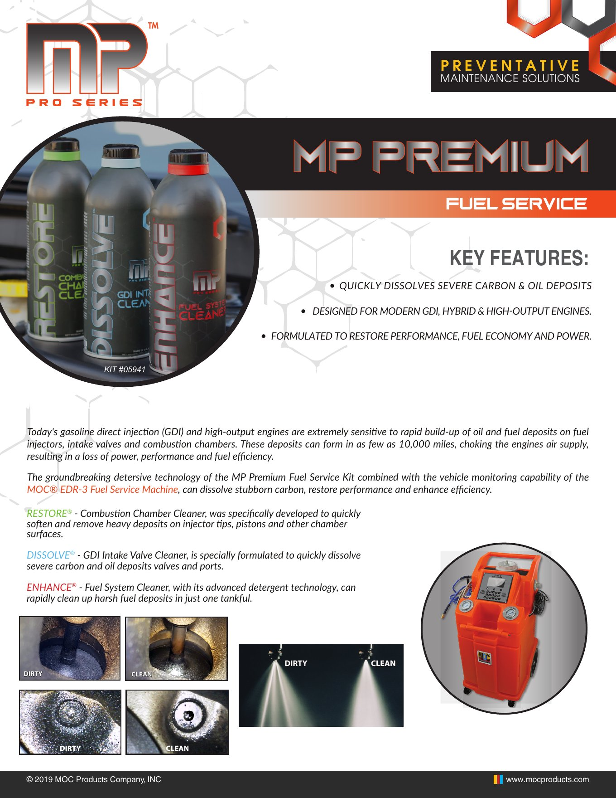
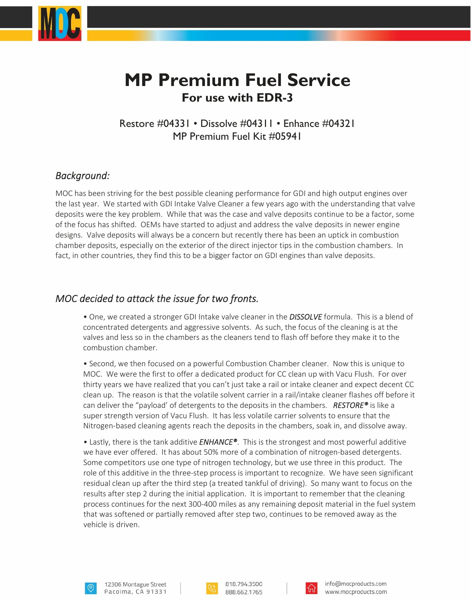
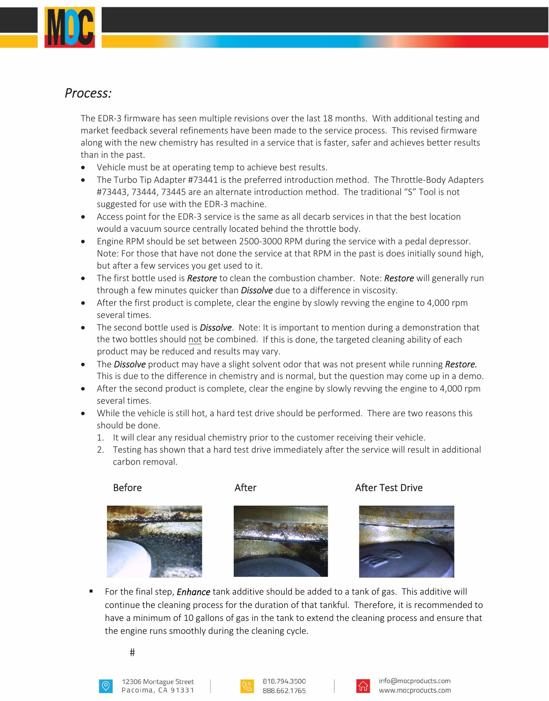
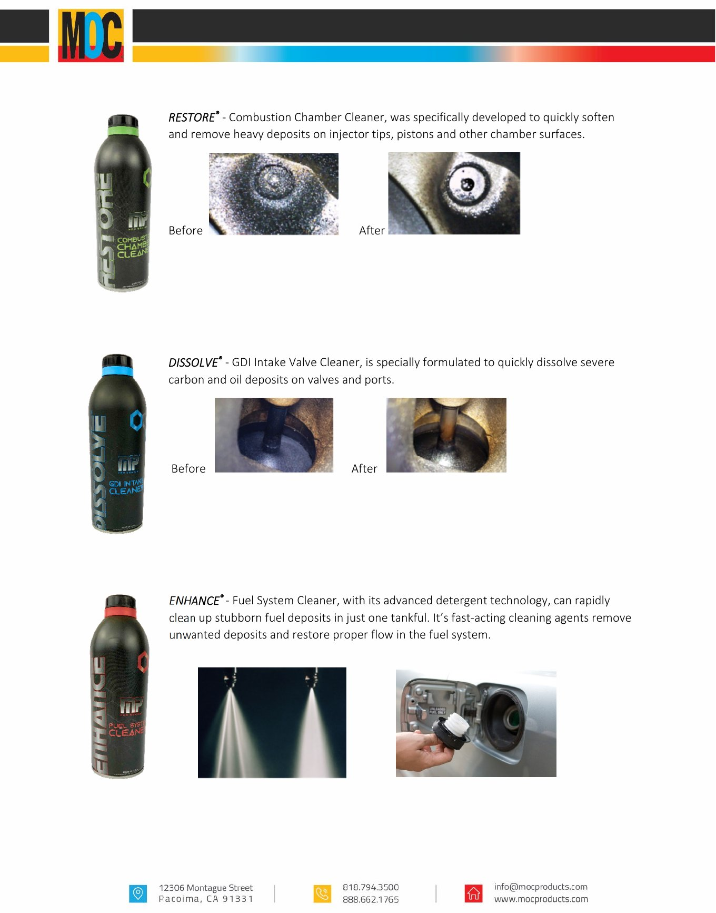

Doc no. MOC-TSB-20-01 // Vol. 20 No. 01 // Feb 24, 2020 // Fuel
Chemicals for EDR-3 Machine Restore Dissolve Enhance
New043310431104321
MOC has improved its GDI Induction Service using the EDR-3 Fuel Service Machine and Module with new updated chemicals and procedure. The EDR-3 Machine and Module manuals have been updated to include the new chemicals and procedures.
What's new
- Start service by injecting one (16oz) can of Restore (Part No. 04331).
- When Step 1 is complete, slowly raise the engine RPM to 4,000 RPM 2 to 3 times to clear any residual product.
- After clearing any residual Restore product, follow up with an application of one (16oz) can of Dissolve (Part No. 04311).
- When Step 3 is complete, slowly raise the engine RPM to 4,000 RPM 2 to 3 times to clear any residual product.
- Test drive the vehicle promptly after the service is complete and the engine is still hot. IMPORTANT: A loaded test drive for 10-15 minutes is recommended after the service is complete. This includes driving the vehicle over 2,000 RPM and 45 MPH for at least 5 minutes. Driving under a load, up a hill or steep slope, is also acceptable.
- When all the above is complete, add one (16oz) can of Enhance (Part No. 04321) to the fuel tank at the next gas fill up for additional cleaning.
GDI INDUCTION SERVICE PROCEDURE: MP PREMIUM FUEL SERVICE KIT: (Part No. 05941):
Contact
For more information, contact the Machine & Equipment Department at 866.244.6621.
Part numbers
| Part No. | Description | Notes |
|---|---|---|
| 05941 | — | |
| 04331 | Restore Combustion Chamber Cleaner | |
| 04311 | Dissolve GDI Intake Cleaner | |
| 04321 | Enhance Fuel System Cleaner |
Original attachments
As issued with the bulletin; not redrawn.



